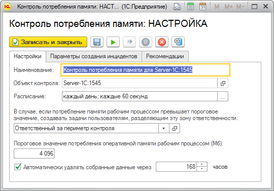

При работе контрольной процедуры программа выполняет подсоединение к агенту сервера 1С:Предприятия 8 при помощи COM-соединителя 1С или серверу RAS и запрашивает сведения о потреблении оперативной памяти рабочими процессами. Кроме того контрольная процедура собирает информацию о сеансах пользователей, выполняющих запросы к серверу 1С:Предприятия, что может помочь при анализе причин произошедшего.
Для работы контрольной процедуры требуется выбрать пороговое значение потребления оперативной памяти рабочим процессом, выраженное в мегабайтах. ЦКК будет сообщать о всех случаях превышения порогового значения.
